Cytoscape downloads in 2015: average 14,000 per month (470 per day)
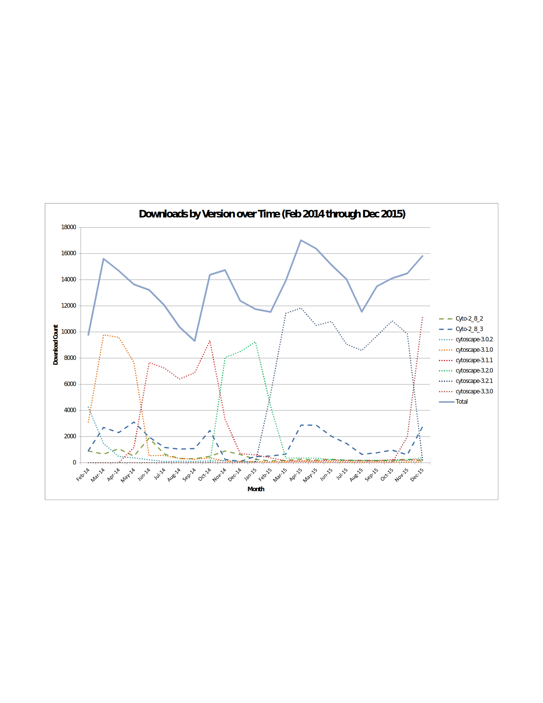Windows is the dominant Cytoscape platform, and in the last year, 32 bit Windows systems have dramatically decreased while 64 bit systems have dramatically increased. Also, Cytoscape 2.x has drastically decreased.

Weekday starts: 3,000 per day (worldwide)
Weekend and holiday starts: 1,000 per day (worldwide)
Web site visits generally increase year over year, while downloads clearly increase year over year. In September 2015, we changed how our download page works, so that the actual downloads are more accurately reported in this graph.
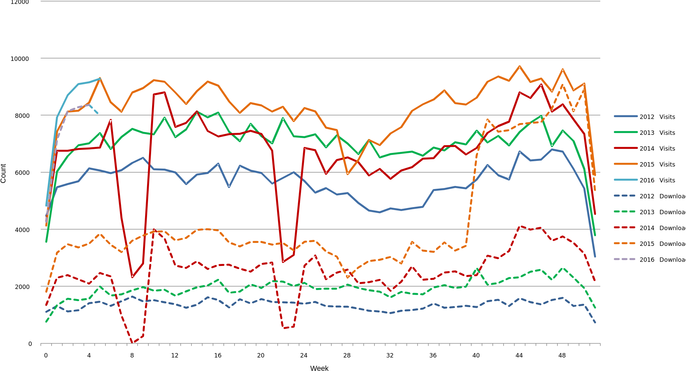Viewed over a multi-year period, web page visits from US workstations are significant, but visits from the rest of the world are even more frequent. The frequency of "Other" shows that Cytoscape is used worldwide.
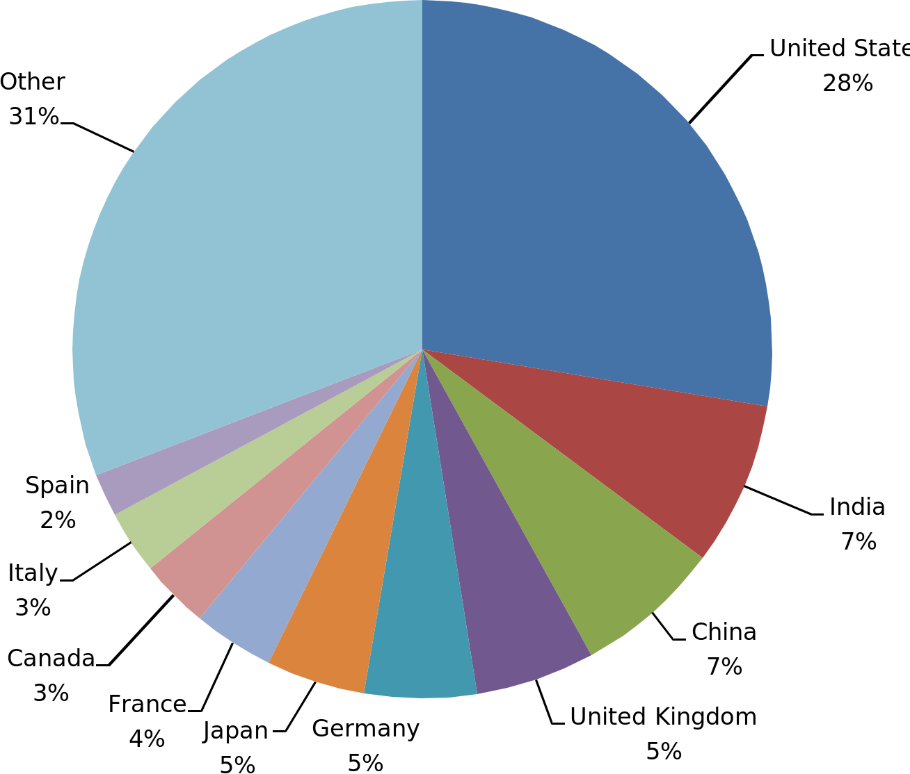Viewed over just the last year, web page visits show continued predominance of visits from US workstations, but also growing use throughout the world.

Viewed over a multi-year period, Cytoscape is most often found via Google search.
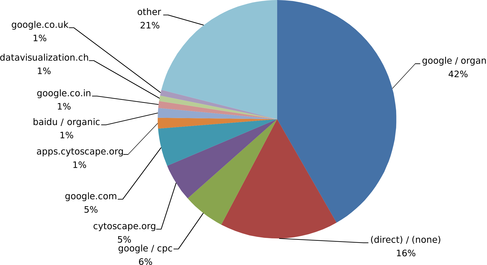Viewed over just the last year, referrals show continued predominance of US-based search engines, but also growing use of non-US search engines compared to previous years.

Viewed over a multi-year period, Network Generation and Data Vizualization are important functions, followed by Graph Analysis, Clustering, and Ontology Analysis.

Viewed over just the last year, Network Generation and Data Vizualization remain important functions, but Network Analysis replaces Graph Analysis, and Enrichment Analysis replaces Ontology Analysis.

The app store has received over 300,000 visits in 4 years worldwide.
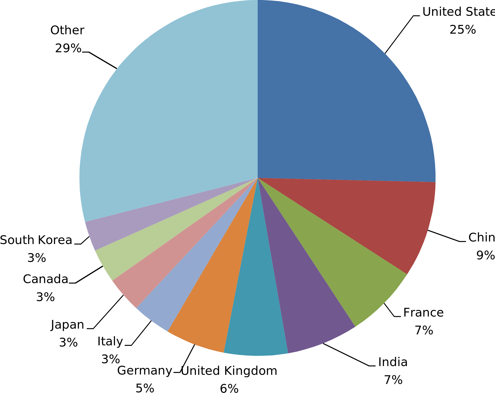Viewed over just the last year, app store visits remain robust and visits from Asia are increasing.

App store visits increase year over year.
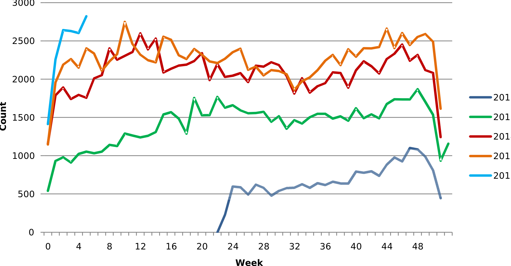Viewed over a multi-year period, apps are downloaded most often from Cytoscape or discovered via Google search.
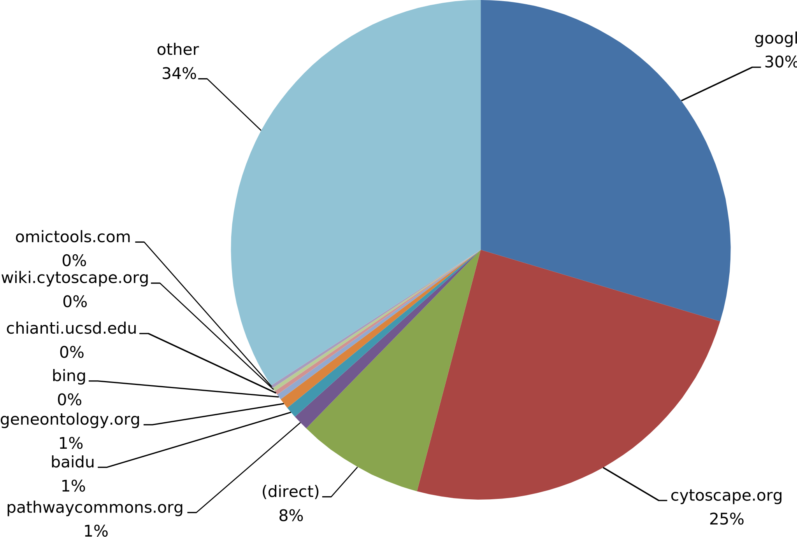Viewed over just the last year, apps are downloaded more and more through search engines and other means.

New app submissions: maintaining average of ~3 per month. The vast majority of new apps are for Cytoscape 3 -- very few new Cytoscape 2 apps are being created.
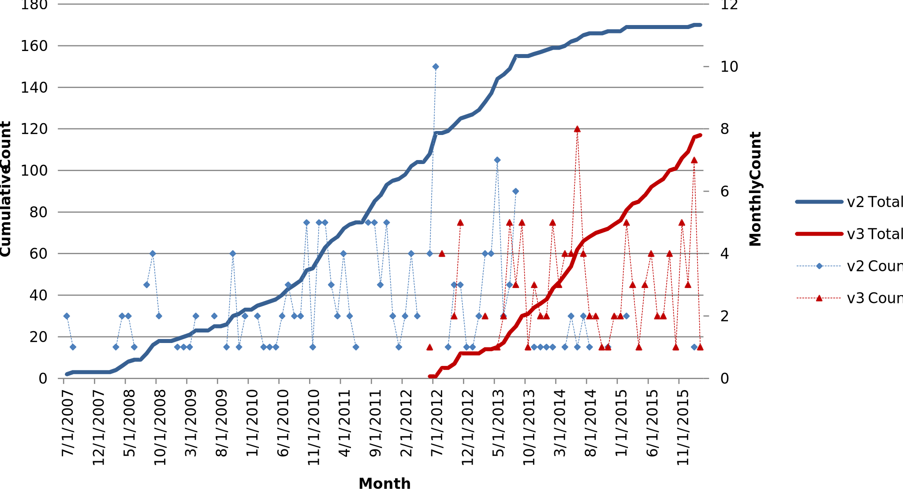Cytoscape is cited in nearly 70 papers per month.
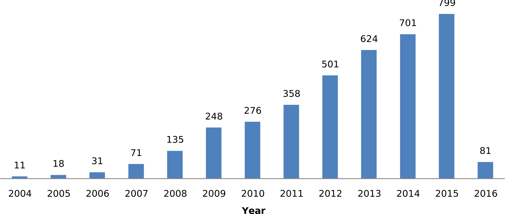Viewed over a multi-year period, US and UK are the top funders of papers citing Cytoscape.
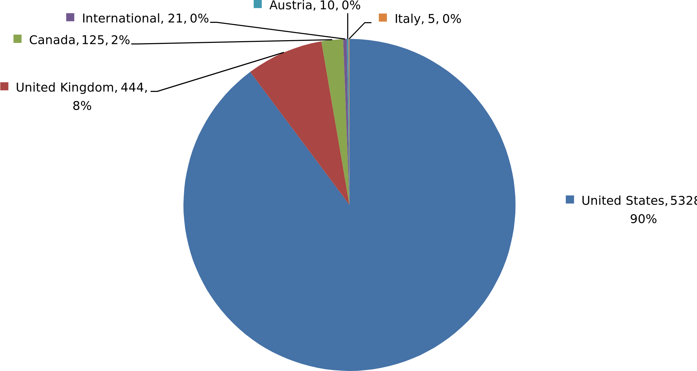Viewed over just the last year, as a percentage of the whole, US funding is declining, and UK and Canada funding is growing.

Viewed over a multi-year period, numerous NIH agencies fund most papers that cite Cytoscape.
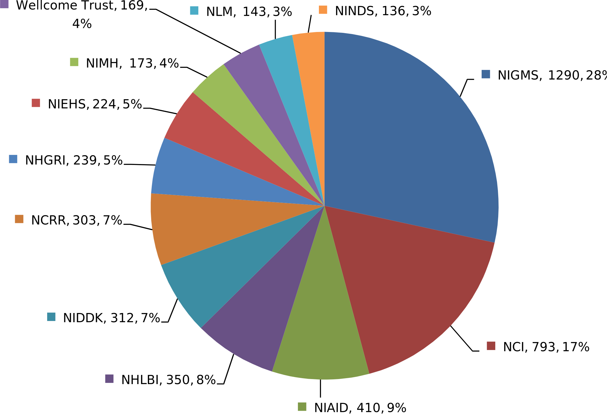Viewed over just the last year, several NIH agencies have not funded papers that cite Cytoscape, and numerous US and non-US agencies have funded a greater share.

Viewed over a multi-year period, Cytoscape is most cited in papers published on PLoS One, followed by a number of other publishers.

Viewed over just the last year, PLoS One remains the leading Cytoscape publisher, and SciRep is gaining ground over the others.